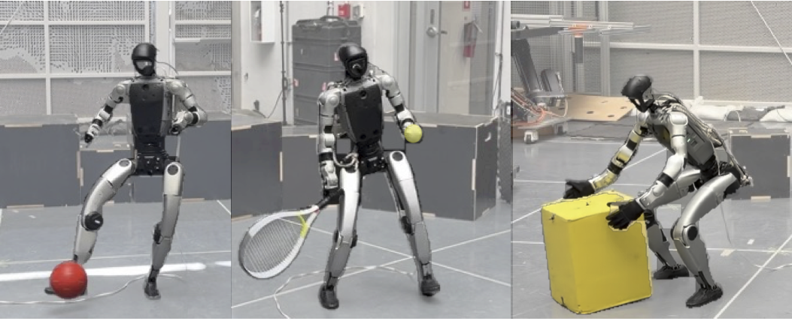
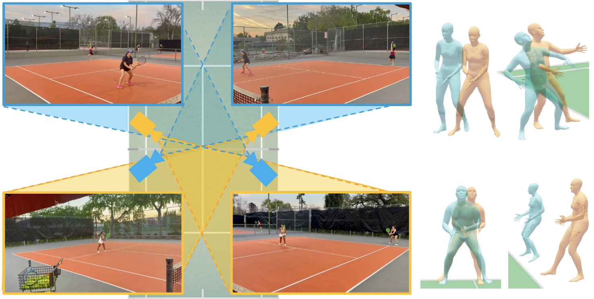
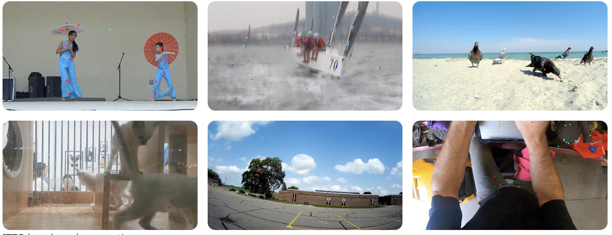
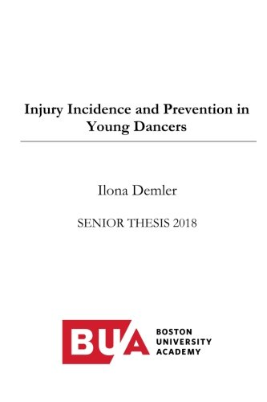

|
Ilona Demler Hello! I'm a PhD student at Caltech advised by Pietro Perona and Georgia Gkioxari. Previously, I graduated from Harvard with a bachelor's degree in physics, where I worked with Michael Brenner. My graduate research is funded by the NSF Graduate Research Fellowship and the Caltech EAS Chair Scholarship. I'm interested in computer vision problems involving understanding the dynamic, 3D world. Currently, I'm working on dynamic human pose estimation and action analysis from video, and dabbling in humanoid robotics. I'm best reachable via email at idemler at caltech dot edu. |
{kind=link}
Publications

Blake Werner, Ilona Demler, Pietro Perona, Aaron D. Ames
Under Review, 2026

Ilona Demler, Xinran Xie, Blake Werner, Anna Szczuka, Pietro Perona
Under Review, 2026

Ilona Demler, Saumya Chauhan, Georgia Gkioxari
NeurIPS, 2025
News
Other Adventures
Lucas Woodley, Ilona Demler, Sarah Lightbody, Uriel Martinez, Clara Nevins, Indumathi Prakash, Daniel L. Shapiro
The Program on Negotiation at Harvard Law School and the Harvard International Negotiation Program

Original Website Template credits: Jon Barron